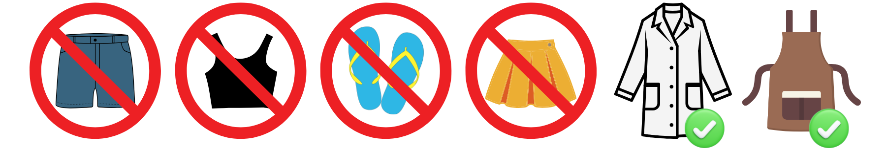
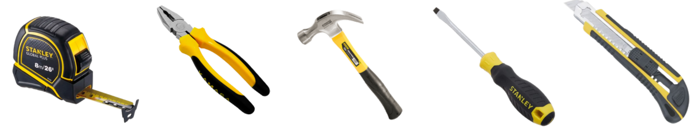
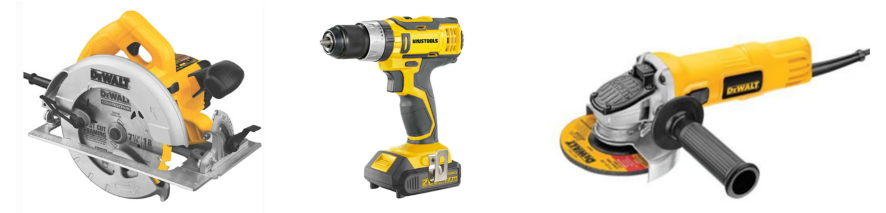

Riesgos y Seguridad
Medidas de Prevención de Accidentes en los Laboratorios
Para garantizar un ambiente seguro en los laboratorios de UTEC, es
fundamental seguir normas de respeto, seguridad, orden y limpieza.
A continuación, se detallan las pautas generales que debes cumplir
para prevenir accidentes y mantener un entorno seguro.
Leer esta guía es requisito obligatorio para realizar la evaluación de
seguridad, reservar espacios y el acceso a los laboratorios. Esta guía
está basada en el documento UTEC-SST-RGL-001, el cual garantiza
las condiciones de seguridad y protección de la vida, integridad física y el bienestar
de los colaboradores.
COMPORTAMIENTO Y DESPLAZAMIENTO EN EL LABORATORIO
- Desplázate con cuidado, atención y paciencia. NUNCA corras ni hagas movimientos bruscos.
- No camines mientras usas audífonos, hablas por teléfono o miras la pantalla de tu celular. Mantente presente y atento a tu entorno.
- Para comunicarte con alguien, acércate primero. No grites ni hables con volumen alto desde un extremo al otro del laboratorio.
- Si necesitas escuchar música, hazlo ÚNICAMENTE mientras estás sentado y siempre con audífonos.
- Evita cualquier tipo de juegos físicos o bromas pesadas, como empujones, arrancarse materiales o jugar con herramientas. Estas acciones pueden generar accidentes imprevistos.
- NUNCA lances objetos a un compañero, sin importar su peso o tamaño. El movimiento y la velocidad pueden causar distracciones y provocar accidentes.
- No realices actividades lúdicas en el laboratorio, como saltar soga con una extensión eléctrica o hacer malabares con cinta masking tape.
USO DEL LABORATORIO Y HERRAMIENTAS
- UTEC Garage es un espacio para trabajos hands-on. No está permitido su uso para estudiar temas teóricos, reuniones sociales o llamadas personales.
- Siempre dirígete al encargado del taller antes de usar cualquier herramienta. Él te indicará los equipos de protección personal (EPP) necesarios y cómo utilizarlas de forma segura.
- El préstamo de herramientas de poder es personal. Si te han prestado una herramienta, debes devolverla directamente al encargado o al lugar designado. No prestes herramientas a otros sin autorización.
- Mantente concentrado en tu tarea. Una distracción puede provocar accidentes.
MANEJO DE MATERIALES Y RESIDUOS
- Si traes materiales para tu trabajo, asegúrate de retirar todos los residuos que generes. UTEC Garage no es un almacén ni un centro de reciclaje.
- Evita dejar materiales abandonados, especialmente si son voluminosos, pesados o contaminantes. Lo que desechas será manejado por personal de mantenimiento y podría terminar en zonas de desmonte, afectando el medio ambiente.
- Antes de traer un material, piensa en su correcta disposición final para minimizar el impacto ambiental.
RESPONSABILIDAD Y REPORTE DE INCIDENTES
- Al terminar, SIEMPRE deja la mesa y zona de trabajo limpia y ordenada, incluyendo regresando las herramientas prestadas a su lugar y desechando los residuos generados.
- Sé consciente del uso del espacio cuida el mobiliario, herramientas y equipos. Recuerda que UTEC Garage es un espacio abierto para toda la comunidad.
- Si observas a alguien comportándose de manera inapropiada o peligrosa, repórtalo al encargado del laboratorio. Tu intervención puede prevenir accidentes, desde leves hasta situaciones graves o letales.
Equipos de Protección Personal (EPP)
Los Equipos de Protección Personal (EPP) son dispositivos que previenen el contacto directo con peligros en el ambiente de trabajo. Su aprovisionamiento y uso es responsabilidad individual, y es crucial inspeccionarlos antes de cada uso para asegurar su buen estado. Los EPPs no eliminan los riesgos, pero protegen y reducen la gravedad de posibles lesiones. Por ello, su uso es parte de un plan preventivo que garantiza la seguridad en el laboratorio.
TIPOS DE EPP Y SU USO ADECUADO
Protección de Manos
Dependiendo del tipo de actividad, los guantes pueden ser:
- Guantes de cuero o badana: para manejo de herramientas de corte o potencia1.
- Guantes de nitrilo con palma recubierta: ideales para trabajos de precisión o corte2.
- Guantes de látex o nitrilo descartables: recomendados para manipulación de materiales químicos no reactivos. Evita usar dispositivos electrónicos después de haber manipulado sustancias con guantes3.
Protección Ocular y Facial
- Lentes de seguridad: protegen de polvo, luz excesiva y partículas1.
- Escudo facial: obligatorio para el uso de la amoladora2.
- Máscara de soldadura con filtro de luz: indispensable en trabajos de soldadura3.
Protección Corporal
- Ropa cerrada: Prenda indispensable para permanecer dentro del laboratorio. NO se permiten shorts, pantalones rasgados, tops o similar, bividí o similar, sandalias, zapatos abiertos.
- Guardapolvo: Protege la ropa y debe ser blanco para detectar posibles derrames. Debe usarse dentro del laboratorio y retirarse al salir. No es un elemento obligatorio, pero sí necesario.
- Delantal de cuero: requerido para trabajos de soldadura.

Protección Respiratoria
- Mascarilla sencilla: suficiente para protegerse del polvo.
- Mascarilla con filtro especializado: necesaria para vapores químicos o polvos finos.
Protección Auditiva
- Es fundamental al operar equipos ruidosos por períodos prolongados.
- Regla general: si debes elevar la voz para hablar en el laboratorio, necesitas protección auditiva.
Conoce y Seguir los Procedimientos para el uso adecuado de herramientas manuales y de potencia
Una herramienta es un objeto elaborado que sirve como extensión
del cuerpo de quien lo usa para permitir o facilitar una tarea
mecánica que sin ella no se podría realizar o sería muy difícil. Las
herramientas se diseñan y fabrican para cumplir uno o más
propósitos específicos, por lo que son artefactos con una función
técnica.
- Herramientas de mano: requieren únicamente fuerza manual para su funcionamiento. Ejemplos: wincha, alicate, martillo, destornillador plano y estrella, cuchilla. 
- Herramientas de poder: requieren energía eléctrica, hidráulica o neumática. Ejemplos: sierra de corte, taladro, amoladora. 
RECOMENDACIONES ANTES DE INICIAR EL TRABAJO
- Inspeccionar visualmente las herramientas junto con el facilitador.
- Consultar y recibir instrucciones antes de operar una herramienta. No proceder sin capacitación.
- Asegurarse de contar con el EPP adecuado. En caso contrario, notificar al encargado.
MANEJO DE HERRAMIENTAS MANUALES
- Transportarlas de forma segura, protegiendo filos y puntas.
- Usarlas únicamente para su propósito original.
- Medidas preventivas:
- Mantener orden y limpieza en su almacenamiento.
- No transportar herramientas en los bolsillos ni llevar muchas en la mano.
- Usar EPP y reportar desperfectos.
- No improvisar usos con herramientas.
MANEJO DE HERRAMIENTAS DE PODER
- Verificar que las herramientas y accesorios estén en buen estado.
- Evitar extensiones unidas con cinta aislante.
- Proteger los cables de cortes, quemaduras o aplastamientos.
- Sujetar la herramienta con ambas manos durante su uso.
- No usar herramientas eléctricas con ropa suelta, accesorios colgantes, cabello suelto.
RECOMENDACIONES PARA FINALIZAR EL TRABAJO
- Retornar las herramientas ordenadas y limpias.
- Notificar cualquier percance al encargado.
- Dejar el área de trabajo limpia y ordenada.
- Reportar el fin del trabajo al responsable del laboratorio.
Pautas de Seguridad Importantes en Caso de Emergencias
- Reconoce tu espacio de trabajo, identifica las rutas de evacuación y las salidas de emergencia.
- Comunica de inmediato al encargado en caso de accidente.
- Si no hubiera un encargado, llama de inmediato al anexo correspondiente.
- No obstruyas el paso peatonal para evitar tropiezos.
- Actitud del estudiante frente al trabajo en los laboratorios de la universidad.
- Uso adecuado del equipo de protección personal.
- Recomendaciones para el uso de herramientas en los laboratorios.
- Pautas de seguridad importantes en caso de emergencias.